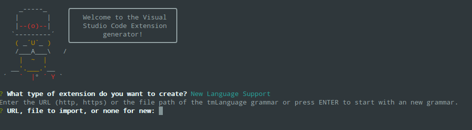
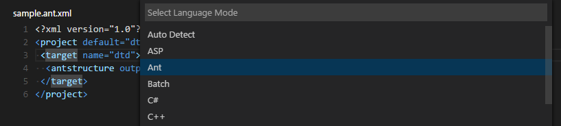

VS Code includes support for many languages in the box giving great syntax highlighting (colorization), bracket matching and more. You and the community can also add new languages to VS Code. This topic explains how to install new languages from the Extension Marketplace as well as create your own.
Adding Colorizers from the Marketplace
Many language colorizers have been uploaded to the VS Code Extension Marketplace by the community. If you find one you want to use, simply install it and restart VS Code and the new language will be available.
Tip: To search for language support for a specific language, type the language name in the Extensions view (⇧⌘X (Windows, Linux Ctrl+Shift+X)) search box.
You can also browse the VS Code Marketplace site directly to find available colorizers and language support.
Adding a New Language
Using the ‘code’ Yeoman generator, you can create an extension that adds syntax highlighting and bracket matching for a language to your VS Code installation.
Central to language support is a TextMate language specification file (.tmLanguage) that describes the colorizer rules. The yeoman generator either takes an existing TextMate language specification file or lets you start with a fresh one.
A good place to look for existing TextMate .tmLanguage files is on GitHub. Search for a TextMate bundle for the language you are interested in and then navigate to the Syntaxes folder. The ‘code’ Yeoman generator can import either .tmLanguage or .pList files. When prompted for the URL or file location, pass the raw path to the .tmLanguage file e.g. http://raw.githubusercontent.com/textmate/ant.tmbundle/master/Syntaxes/Ant.tmLanguage. Make sure that the path points to the content of the file, not the HTML file showing the content.

The generator will prompt you for other information such a unique name (this should be unique to avoid clashing with other extensions) and the language name, aliases and file extensions. You also have to provide the top level scope name of the grammar. That scope name must match the scope name in the tmLanguage file.
When the generator is finished, open the created folder in Visual Studio Code. Have a look at the generated <languageid>.configuration.json file: It contains more language settings such as the tokens used for comments and brackets. Make sure the configurations are accurate.
Here is an example for a language with XML-like brackets:
|
For more details check out the languages contribution point documentation.
The generated vsc-extension-quickstart.md file also contains more information on how to run and debug your extension.
To use your extension in your stable VS Code installation, copy the complete output folder to a new folder under your .vscode/extensions folder and restart VS Code. When you restart VS Code, your new language will be visible in the language specifier dropdown and you’ll get full colorization and bracket/tag matching for files matching the language’s file extension.

Publishing Language Support to the Extension Marketplace
If you’d like to share your new language with the community, you can publish it to the Extension Marketplace. Use the vsce publishing tool to package your extension and publish it to the VS Code Marketplace.
Tip: To make it easy for users to find your language support, include the language name and words “language” or “language support” in the extension description and set the
CategorytoLanguagesin yourpackage.json.
We also have recommendations on how to make your extension look great on the VS Code Marketplace, see Marketplace Presentation Tips.
Add to your Language Support Extension
When you’re adding a new language to VS Code, it is also great to add language snippets to support common editing actions. It is easy to combine multiple extensions like snippets and colorizers into the same extension. You can modify the colorizer extension manifest package.json to include a snippets contribution and the snippets.json.
|
Next Steps
Colorizers are just one way to customize VS Code, If you’d like to learn more about VS Code extensibility, try these topics:
- Snippets - Learn how to also include snippets in your language extension.
- Custom themes - Learn how to import existing TextMate themes.
- Extending Visual Studio Code - Learn about other ways to extend VS Code
Common Questions
Q: Can I add more file extensions to my colorizer?
A: Yes, the yo code generator provides the default file extensions from the .tmLanguage file but you can easily add more file extensions to a languages contribution extensions array. In the example below, the .asp file extension has been added to the default .asa file extension.
|
Q: Can I add more file extensions to an existing colorizer?
A: Yes. To extend an existing colorizer, you can associate a file extension to an existing language identifier with the files.associations setting. IntelliSense will show you the list of currently available language ids.
For example, the setting below adds the .mmd file extension to the markdown colorizer:
|
Q: What if I want to completely override an existing colorizer?
A: Yes. You override the colorizer by providing a new grammars element for an existing language id. Also, add a extensionDependencies attribute that contains the name of the extension that defines the grammar that you want to replace.
|